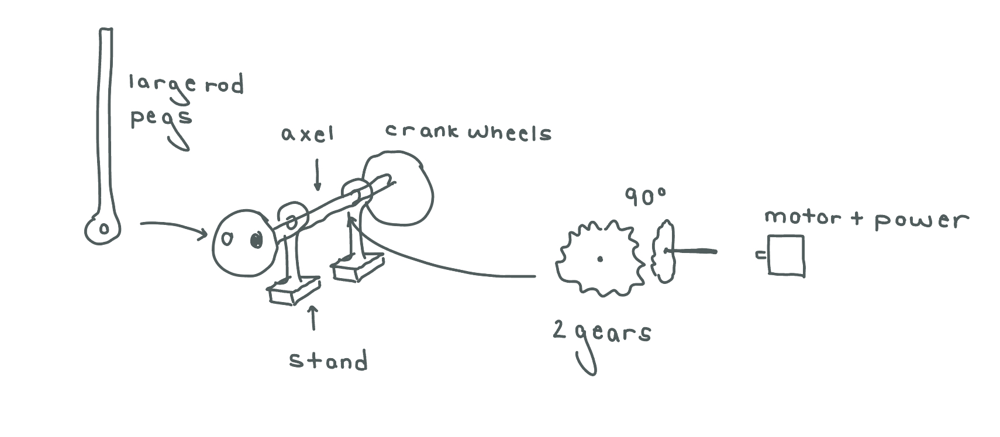
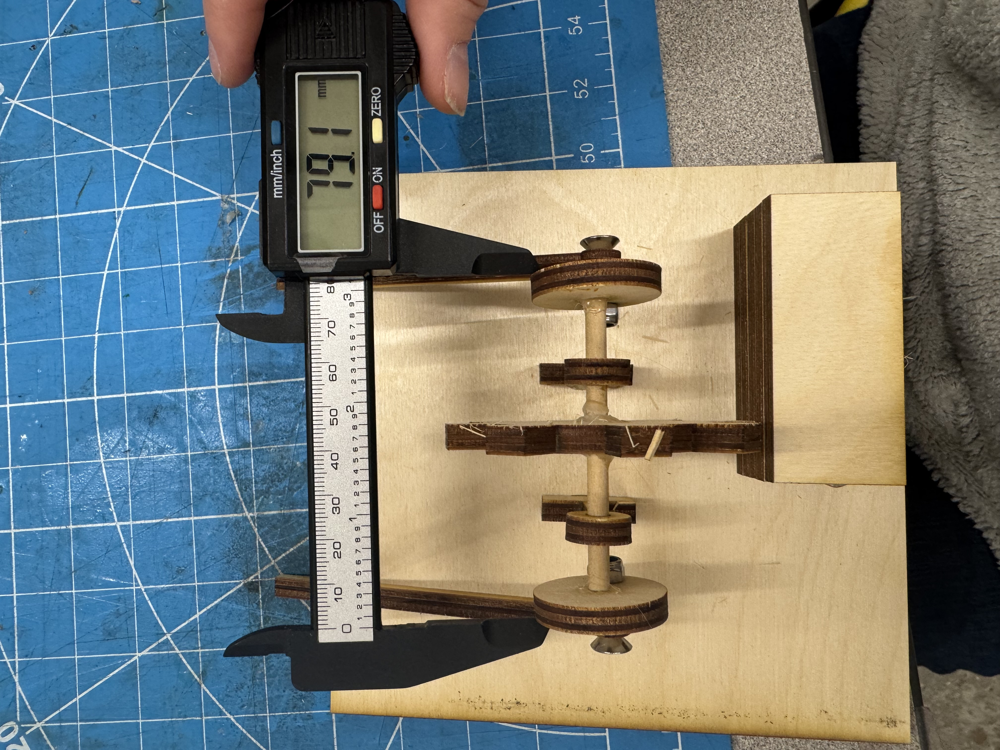
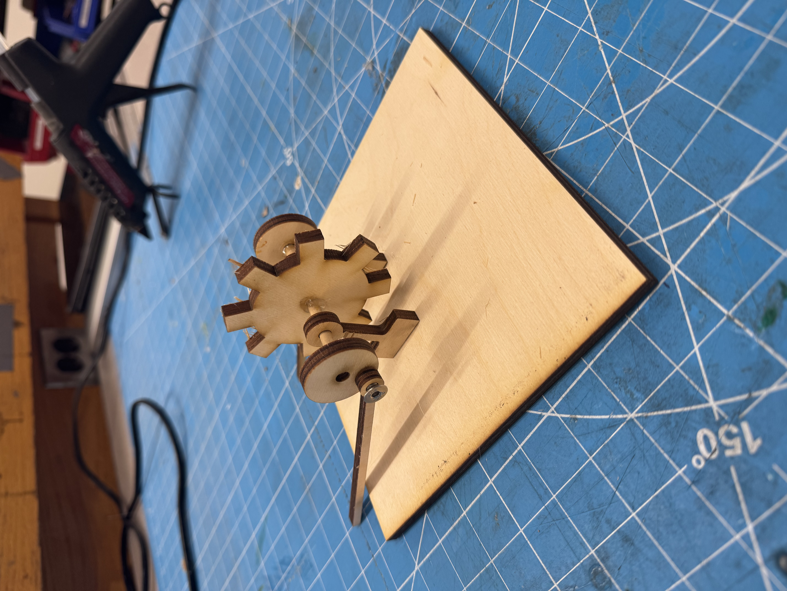

<div class="textcontainer">
<p class="margin"> </p>
<h3>Week 3: Hand Tools and Fabrication</h3>
<p><br></p>
<h3>Kinetic Sculpture: Learning Process</h3>
We were tasked to create a Kinetic Sculpture. This process took multiple rounds of fine-tuning and going back to the drawing board. This particular section goes over the entire process from scratch. If you want to understand how to assemble it, scroll down to the next section.
<p><br></p>
<h4>Version 1</h4>
<p></p>
I'm from Florida, and so I wanted to make a kinetic sea turtle whose flippers would move using a crank-shaft mechanism.
I was inspired by <a href="https://www.youtube.com/watch?v=OX8q5n8GdNE">this video</a>.
I first created a drawing of how I envisioned the mechanics to move:
<p><br></p>

<p><br></p>
After creating a rough outline of what I wanted, I began to make the parts necessary. I started with a 3D
testing feature for the gears. I followed <a href="https://www.youtube.com/watch?v=qAzCdCLvk6A">this tutorial</a>
to create the gears. Shown below is a video of them moving:
<p><br></p>
<video class="center_image" width="640" height="360" controls>
<source src="version1_gear.mov" type="video/quicktime">
Your browser does not support the video tag.
</video>
<p><br></p>
After the gears, I made the rest of the parts shown from the drawing. Here are their 2D sketches:
<p><br></p>
<img class="center_image" src="version1_parts.png" alt="Parts">
<p><br></p>
I 3D printed these components using cardboard. To quickly test that the gears spun outside of Autodesk, I used double-sided tape to
assemble items and plastic axels that lay in the shop to mimic rotation.
<p><br></p>
<video class="center_image" width="640" height="360" controls>
<source src="version1_gear_sample.MOV" type="video/quicktime">
Your browser does not support the video tag.
</video>
<p><br></p>
It appears to work, but it needs to be more sturdy. That is fine for the next version.
Once I began to put the rest of the pieces on using bolts and nuts, I found that the crank shaft rod would not stay upright. This was because it needs a support peg to prevent it
from moving too far left or right at any point. I would need to 3D print a type of
box whose roof would have slits to function similarly to support pegs. This is what the next version will focus on.
<p><br></p>
Once the mechanical parts were made and tested around with, I moved onto the decorative parts.
I grabbed a turtle design from <a href="https://grabcad.com/library/gyres-turtle-1">GrabCad</a>. I used the projection feature on Autodesk Fusion to project the 3D model onto a 2D sketching plane.
I also make kelp using the control-point spline feature in Autodesk Fusion. Here were the results:
<p><br></p>
<img class="center_image" src="version1_turtles.png" alt="Turtles">
<p><br></p>
<h4>Version 2</h4>
For this part, I focused on making my box. I initially made 4 sides, but after 3D printing them,
I needed wiggle-room to put in the items, and I also accidentally positioned the gears too close to one edge so I couldn't put up the 4th wall even if I wanted to. But I like it better
this way for now. The slits on the roof were cut with an exacto-knife to allow me more flexibility
to position the gears. I also began to use more permanent methods of fastening items together, namely
nuts/bolts along with hot glue. The image below shows the first gear-part being glued down.
It includes one gear, an axel, two support bases, and two crank-shifts.
<p><br></p>
<img class="center_image" src="version2_3walls.HEIC" alt="Parts">
<p><br></p>
After putting in the first gear-part, I added the second-gear part. I had to hot-glue two smaller plastic axels
together because the ones in the shop weren't as long as what I wanted. This gear-part consists of one gear,
an axel, and two support beams. I initially put the beams on either side of the wheel, but one beam
was coming into contact with the crank shift and causing friction, so I put it on the outside.
I made some changes from the previous photo:
<ol>
<li><b>Change 1:</b> the two-crank shifts were tough. It turned out that I can't hot glue the outer sides of them, otherwise
the glue gets in the way of the rod and causes it to get stuck. I had to peel away what I could and re-hot glue
them on the interiors for it to work.</li>
<li><b>Change 2:</b> another thing I had to change was the bolt size. I was using M5 bolts but the bolt head was too budgy
and was coming into contact with the long-axels or sides of the walls. I switched to M3 bolts with flat heads
and that did the trick. I might though resort back to M5 bolts with flat heads because M3's diameter was too small
and could wiggle loose.</li>
</ol>
<p><br></p>
<video class="center_image" width="640" height="360" controls>
<source src="version2_samplefilm.MOV" type="video/quicktime">
Your browser does not support the video tag.
</video>
<p><br></p>
<h4>Version 3</h4>
The transition from Version 2 to 3 involved minor changes:
<ol>
<li>I realized I need to attach the first axel to a motor. A friend of mine showed that his
version simply attaches the gear to the motor's built-in axel, so I'm scrapping the first
gear's axel and replacing it with the motor's. </li>
<li>The crank shaft wheel is a bit big and is causing friction. I downsized its diameter to fix this.</li>
<li>Because I downsized the crank shaft, I had to downsize the axel diameter on the crank shaft, gears, and support stands.</li>
<li>A smaller axel required me to switch from plastic pipes to dowels.</li>
<li>I had to increase the size of the square box's width and length to avoid running into the situation where I couldn't put up the last wall.</li>
<li>Because I now feel confident in my mechanics, I switched to wood.</li>
<li>Because wood is hard to cut through without a laser cutter, I had to measure out and laser cut divits for the crank shaft pegs to poke through.
I did this by measuring the width of my wood for the pegs, then measuring the distance between the two pegs (assuming the axel was centered in the box),
and finally adding some "wiggle-room" on the holes for safety/stopping friction.
</li>
<li>The motor I was using was not tall enough to be at the height of my original axel. So, I made a "bed" for the motor
out of wood.
</li>
</ol>
The following photos show part of this process. The first photo shows the bed of wood for the motor and me measuring the width of the 3D printed wood pegs on the dowel axel:
<p><br></p>

<p><br></p>
This second video shows me experimenting with the voltage on the core mechanical setup. My motor works best between 1.5-2 V.
<p><br></p>
<video class="center_image" width="640" height="360" controls>
<source src="version3_experiment1.MOV" type="video/quicktime">
Your browser does not support the video tag.
</video>
<p><br></p>
This last video shows me attaching the top of the box and ensuring the pegs were able to move properly.
<p><br></p>
<video class="center_image" width="640" height="360" controls>
<source src="version3_experiment2.MOV" type="video/quicktime">
Your browser does not support the video tag.
</video>
<p><br></p>
From here, I added the final details. See below for the steps on how to build from scratch with this final version
and the cool results!
<p><br></p>
<h3>Kinetic Sculpture: Steps to Build</h3>
By the end of this tutorial, you can build this:
<p><br></p>
<video class="center_image" width="640" height="360" controls>
<source src="final_video1.mov" type="video/quicktime">
Your browser does not support the video tag.
</video>
<p><br></p>
Step 1: download the CAD .dxf files and optionally open them in Autodesk Fusion to configure their sizes
<p class="margin"> </p>
<div class="flexrow">
<a id="btn" href="./week3.zip" download>Download CAD Files
</a>
</div>
<p class="margin"> </p>
Here are all of the variables you can reference, if you wish to configure them:
<ol>
<li>"bolt" refers to the nut-bolts used to fasten the pegs to the crank-shafts. If you're using M5 bolts, set the bolt parameter to 5mm.</li>
<li>"rod" refers to the large-rod pegs sticking out from the crank-shaft wheels</li>
<li>"stand" refers to the small-rods with rectangular bases that hold up the axel, gears, and crank-shafts</li>
</ol>
<table class="myTable">
<tr><th>Name</th><th>Value (mm)</th>
<tr><td>axel_diameter</td><td>5</td>
<tr><td>bolt_diameter</td><td>5</td>
<tr><td>box_height</td><td>90</td>
<tr><td>box_width_length</td><td>160</td>
<tr><td>crank_wheel_diameter</td><td>30</td>
<tr><td>gear_diameter</td><td>50</td>
<tr><td>gear_tooth_height</td><td>10.5</td>
<tr><td>rod_circle_diameter</td><td>10</td>
<tr><td>rod_height_from_center</td><td>100</td>
<tr><td>rod_width</td><td>4</td>
<tr><td>stand_base_height</td><td>15</td>
<tr><td>stand_base_width</td><td>25</td>
<tr><td>stand_circle_diameter</td><td>15</td>
<tr><td>stand_height_from_center</td><td>25</td>
<tr><td>stand_width</td><td>4</td>
</table>
<p><br></p>
Step 2: laser cut the .dxf files
<ol>
<li>In Rhino, prior to laser cutting, set all cuts to "CUT" (no engraving).</li>
<li>Once Rhino is done, select print and open UCP software.</li>
<li>On the UCP software, set the material to what you prefer. For reference, I used wood for all machinery and cardboard for accessories. Be sure to adjust thickness: for reference, my wood thicknesses was 6.2mm.</li>
<li>Move to the physical laser cutter and do all proper ventilation and safety checks on the machine.</li>
<li>Adjust the z-score on the laser cutter, align the laser cutter,</li>
</ol>
After printing the wood-machinery, these are some of the parts you should have (not pictured: wall-top, one side-walls, and motor base pieces).
Be sure to also grab:
<ol>
<li>Tape</li>
<li>Hot glue gun</li>
<li>Dowel with diameter 5mm and 79mm in length or larger</li>
<li>2x M5 flat bolts and lock nuts</li>
</ol>
<p><br></p>
<img class="center_image" src="final_lasercut.jpeg" alt="Turtles">
<p><br></p>
Step 3: assembly
<p></p>
Begin by assembling "part 1" of the machinery, that is, the axel, gear, stands, and crank shafts + pegs.
<ol>
<li>Cut the dowel axel to approximately 79 mm, if it is not that size.</li>
<li>Start on one end of the dowel, with the crank shaft wheel. Hot glue the crank's interior to the dowel. DO NOT let the dowel poke out on the other side- it causes friction.</li>
<li>Insert a stand down the dowel, no glue</li>
<li>Hot glue the gear in the center</li>
<li>Insert a stand down the dowel, no glue</li>
<li>Repeat hot glue with the other crank. Make sure the peg-holes align on either end.</li>
<li>Attach the pegs on the peg-holes using your bolts and lock nuts.</li>
</ol>
Here is what it should look like when done:
<p><br></p>

<p><br></p>
Next, add a wall and the motor base pieces to act as a bed for your motor.
<p><br></p>
<img class="center_image" src="final_part2.HEIC" alt="Turtles">
<p><br></p>
Finally, add on the remaining walls with hot glue or tape (tape if you want something more temporary). Be sure when adding the top wall to put the pegs through the holes simultaneously.
At this point, you're also ready to attach the motor. Attach it as shown below. BE SURE the gear is not twisted and is parallel with the motor. Then, place it on the bed. Feel free
to use tape to hold down the motor on the bed. Feel free to also begin adding your accessories via hot glue or tape.
<p><br></p>
<div class="img-container">
<img src="final_part3.HEIC">
<img src="final_part4.HEIC">
</div>
<p><br></p>
You're now done and ready to test with power. This motor works best at 1.5-2 V. Any faster and your turtle has a small chance to fly into space (let him dream).
Here are some videos of it working!
<p><br></p>
<video class="center_image" width="640" height="360" controls>
<source src="final_video1.mov" type="video/quicktime">
Your browser does not support the video tag.
</video>
<p><br></p>
<p><br></p>
<video class="center_image" width="640" height="360" controls>
<source src="final_video2.mov" type="video/quicktime">
</video>
<p><br></p>
<p><br></p>
</div>